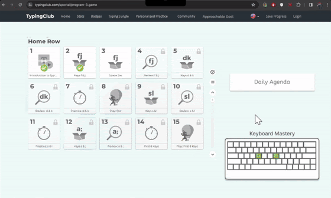
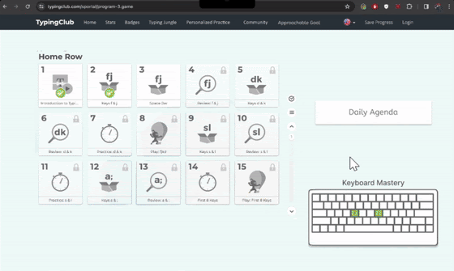

TypingClub
Project Overview
TypingClub is an educational platform designed to enhance typing skills through an engaging and interactive learning experience. This tool is ideal for both students and adults seeking to improve their keyboard proficiency and typing speed. Users can access a wide range of typing lessons, games, and tests that progressively increase in complexity to suit all skill levels. The platform also allows educators to track progress, customize lessons, and provide targeted feedback through detailed performance analytics. This section of the portfolio highlights the enhancements our team implemented in the TypingClub web application to optimize user learning paths and increase overall typing efficiency.
The Problem
- No daily and weekly agenda that suggests what to practice based on the user's ideal daily time commitment.
- No personalized practice mode that generates text based on the user's “keyboard” and “finger” mastery skill.
- No team-based or invite friends features to strengthen competition to affect group influences on motivation.
- No recommender which provides a personalized plan based on the user's goals and targets.
- No journey map that will update and grow alongside the user’s progress.
Approach
Our team generated five concepts to tackle the issues identified during initial user research. First, daily/weekly agendas suggesting practice plans based on users' time availability. Second, personalized typing sessions tailored to individual mastery levels. Third, enabling social competitions with friends. Fourth, providing personalized goals and plans. Lastly, a visual journey map to track keyboard mastery progress. I was responsible for the keyboard mastery journey map feature, displaying a graphic that fills up as users learn new keys.
Affinity Diagraming
Process
Storyboard

Personalized Practice
Approachable Goal
Prototypes
 

Prototype Usability Feedback
Feature 1: Daily / Weekly Agenda
1. Provide clarity on whether users should complete the daily or weekly agenda, and the purpose of each.
2. Improve navigation and progress tracking by adding a back button, number on the progress bar, and a way to switch between daily and weekly views.
Feature 2: Personalized Practice
1. Offer more detailed explanations or a tutorial to clarify the purpose and functionality of this feature.
2. Improve the user interface, including the color scheme, button placements, and options to return to the AI chat or continue to the next lesson.
Feature 3: Team-Based/Invite Friends
1. Ensure consistent styling and layout with the rest of the app, and consolidate the group and friend lists into one interface.
2. Provide clearer instructions on how to join groups, invite friends, and participate in group activities or competitions.
Feature 4: Approachable Goal
1. Separate the goal-setting functionality from the placement test and consider placing it under the user profile instead.
2. Clarify the purpose of "classes" and the different "customized plan" buttons, and allow users to set multiple goals at once.
Feature 5: Journey Map
1. Improve visibility and consistency by matching the color scheme, art style, and drop shadow effects with the overall app design.
2. Enhance interactivity by adding hover effects to indicate clickability and considering a pop-up module instead of a full-page view.
Reflection
The group project was a great hands-on learning experience for prototyping and user-centric design. Working in teams fostered collaboration and combined our diverse skills effectively. Iterative prototyping and user testing helped solidify our Figma prowess and design thinking. Clearer requirements, more time for user testing, and early motivation lectures could improve the process. Peer feedback on intermediate deliverables could enrich the learning and refine the final outputs. Overall, a valuable assignment that equipped us with practical prototyping and design abilities.
Final Feature Changes
Here are the two most important points summarized for each feature improvement:
Feature 1: Daily Agenda
1. Added animated level up screens to engage users.
2. Did not add ability to view level rewards or change entry point location.
Feature 2: Personalized Practice
1. Made "keyboard and finger mastery" more noticeable through underlining.
2. Did not implement ability for users to upload their own books due to copyright concerns.
Feature 3: Team-Based/Invite Friends
1. Added CPU opponent set at +4 WPM above user's level.
2. Added end game screen showing stats, option to play again, and points earned based on accuracy.
Feature 4: Approachable Goal
1. Separated recent activity tab and added detail/goals for each focus area.
2. Reworded "Break days" to "Rest Days" and added estimated time icons.
Feature 5: Journey Map
1. Added option for Portuguese keyboard layout.
2. Moved graphic to reduce whitespace and added info on how "mastery" is calculated.